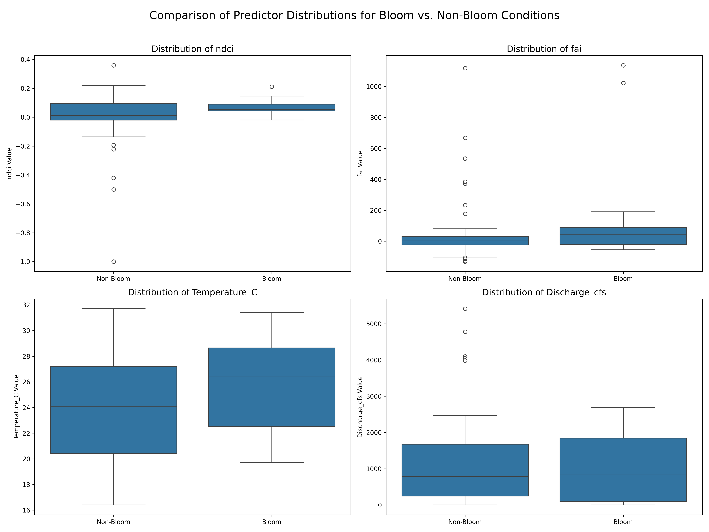

S77 and S79 Analysis
Focusing on Both S77 and S79
1. Isolating S77 and S79 Station Data from Satellite and Chlorophyll-a Datasets
Code below loads the master file of all stations and all available Sentinel-2 images, with NDCI and FAI calculated. This code isolates only the S77 and S79 station for analysis, and drops dates with no imagery for the station.
import pandas as pd
# Load the CSV file
file_path = "Extracted_Indices_Final.csv"
df = pd.read_csv(file_path)
# Strip any extra whitespace in column names
df.columns = df.columns.str.strip()
# Filter for Station_Id == 'S77', 'S79'
df_s77_s79 = df[df['Station_Id'].isin(['S77', 'S79'])]
# Drop rows where 'ndci' or 'fai' are missing
df_s77_s79 = df_s77_s79.dropna(subset=['ndci', 'fai'])
# Preview the result
print(df_s77_s79.head())
# Export to a new CSV
output_path = "Extracted_Indices_S77_and_S79.csv"
df_s77_s79.to_csv(output_path, index=False)
import pandas as pd
# Load the CSV file
file_path = "S77_andS79_Chlorophylla_Temp_Data.csv"
df = pd.read_csv(file_path)
# Strip any extra whitespace in column names
df.columns = df.columns.str.strip()
# Filter for only Chlorophyll-a samples
df = df[df['Test Name'] == 'CHLOROPHYLL-A(LC)']
# Preview the result
print(df.head())
# Export to a new CSV
output_path = "S77_and_S79_Chlorophylla_Data.csv"
df.to_csv(output_path, index=False)
print(df.shape)
There are some sample codes that I am going to have to filter through, will use code to generate a list of the unique sample codes under 'Sample Type New'. Unique Values are SAMP, FCEB, EB, and RS. Will check DBHYDRO for what these mean.
SAMP = Sample
FCEB = Field Cleaned Equipment Blank
EB = Equipment Blank
RS = Replicate Sample
Will filter out FCEB, EB, and RS.
# Load the CSV file
file_path = "S77_and_S79_Chlorophylla_Data.csv"
df = pd.read_csv(file_path)
# Strip any extra whitespace in column names
df.columns = df.columns.str.strip()
# Filter for only Chlorophyll-a samples
df = df[df['Sample Type New'] == 'SAMP']
# Preview the result
print(df.head())
# Export to a new CSV
output_path = "S77_and_S79_Chlorophylla_Data_SamplesOnly.csv"
df.to_csv(output_path, index=False)
print(df.shape)
Visualizing S77 and S79 Chlorophyll-a Data:
import pandas as pd
import matplotlib.pyplot as plt
# Step 1: Load the CSV file
file_path = "S77_and_S79_Chlorophylla_Data_SamplesOnly.csv"
df = pd.read_csv(file_path)
# Step 2: Clean column names and parse date
df.columns = df.columns.str.strip()
df['Collection_Date'] = pd.to_datetime(df['Collection_Date'], errors='coerce')
# Step 3: Filter for only S77 and S79
df_filtered = df[df['Station ID'].isin(['S77', 'S79'])]
# Optional: Drop rows with missing values in 'Value' or date
df_filtered = df_filtered.dropna(subset=['Collection_Date', 'Value'])
# Step 4: Sort by date
df_filtered = df_filtered.sort_values(by='Collection_Date')
# Step 5: Plot time series for each station
plt.figure(figsize=(12, 6))
for station in ['S77', 'S79']:
station_data = df_filtered[df_filtered['Station ID'] == station]
plt.plot(station_data['Collection_Date'], station_data['Value'], label=f'{station}')
# Step 6: Customize the plot
plt.xlabel('Date')
plt.ylabel('Chlorphyll-a Measurement (μg/L)') #
plt.title('Time Series Plot for S77 and S79')
plt.legend()
plt.grid(True)
plt.tight_layout()
plt.savefig('S77_S79_Chlorophylla_TimeSeries.png', dpi=300)
plt.show()

2. Merging Satellite Data with Chlorophyll-a Data
Due to data availability, datasets were merged on 2-day, 3-day, and 5-day windows. This allowed for more data pairings while trying to keep the dates and results of water date close to the date of satellite imagery collection.
Code below is for 2-day window, 3 and 5-day were changed by replacing the number 2s in Step 6.
# Import required libraries
import pandas as pd
from datetime import timedelta
# Step 1: Load the satellite indices CSV
satellite_fp = "Extracted_Indices_S77_and_S79.csv"
sat_df = pd.read_csv(satellite_fp)
# Step 2: Load the chlorophyll-a samples CSV
chl_fp = "S77_and_S79_Chlorophylla_Data_SamplesOnly.csv"
chl_df = pd.read_csv(chl_fp)
# Step 3: Clean column names
sat_df.columns = sat_df.columns.str.strip()
chl_df.columns = chl_df.columns.str.strip()
# Step 4: Convert date columns to datetime format
sat_df['date'] = pd.to_datetime(sat_df['date'], errors='coerce')
chl_df['Collection_Date'] = pd.to_datetime(chl_df['Collection_Date'], errors='coerce')
# Step 5: Initialize new column for Chlorophyll-a values
sat_df['Chlorophylla_Measurement'] = None
# Step 6: Match satellite rows to chlorophyll-a samples within ±2 days AND same Station_Id
for idx, sat_row in sat_df.iterrows():
sat_date = sat_row['date']
station_id = sat_row['Station_Id']
window_start = sat_date - timedelta(days=2)
window_end = sat_date + timedelta(days=2)
# Match on date range AND station ID
matches = chl_df[
(chl_df['Collection_Date'] >= window_start) &
(chl_df['Collection_Date'] <= window_end) &
(chl_df['Station ID'] == station_id)
].copy()
if not matches.empty:
# Find the sample closest in time
matches['TimeDiff'] = (matches['Collection_Date'] - sat_date).abs()
closest_sample = matches.loc[matches['TimeDiff'].idxmin()]
sat_df.at[idx, 'Chlorophylla_Measurement'] = closest_sample['Value']
# Step 7: Drop unmatched rows
sat_df = sat_df.dropna(subset=['Chlorophylla_Measurement'])
# Step 8: Save merged file
output_fp = "S77_S79_Satellite_Chlorophylla_for_ThresholdingValues_2DayWindow.csv"
sat_df.to_csv(output_fp, index=False)
print(f"✅ Merged dataset saved to: {output_fp}")
print(f"📊 Final dataset shape: {sat_df.shape}")
Accuracy results of the 2-day, 3-day, and 5-day windows:
2-day Window:
FAI ~ Chlorophyll-a: y = -4.4776 * x + 556.2196
NDCI ~ Chlorophyll-a: y = 0.0021 * x + -0.0458
Index thresholds for 40.0 µg/L Chlorophyll-a:
FAI Threshold: 84.4721
NDCI Threshold: 0.0398
3-day Window:
FAI ~ Chlorophyll-a: y = -1.3877 * x + 494.5230
NDCI ~ Chlorophyll-a: y = 0.0012 * x + 0.0306
Index thresholds for 40.0 µg/L Chlorophyll-a:
FAI Threshold: 65.3719
NDCI Threshold: 0.0535
5-day Window:
FAI ~ Chlorophyll-a: y = -3.4817 * x + 524.0014
NDCI ~ Chlorophyll-a: y = 0.0010 * x + 0.0366
Index thresholds for 40.0 µg/L Chlorophyll-a:
FAI Threshold: 384.7329
NDCI Threshold: 0.0766


3. Isolating and Analyzing S79 Discharge and Water Temperature Data
Already have S77 file, just need S79 data to be isolated.
Starting with Water Temperature Data:
Code below loads filters the water temperature data to S79 and SAMP data.
import pandas as pd
# Load the CSV file
file_path = "WaterTemp_AllStations.csv"
df = pd.read_csv(file_path)
# Strip any extra whitespace in column names
df.columns = df.columns.str.strip()
# Filter for Station_Id == 'S77', 'S79'
df_s77_s79 = df[df['Station ID'].isin(['S77', 'S79'])]
# Filter for only Chlorophyll-a samples
df_s77_s79 = df_s77_s79[df_s77_s79['Sample Type New'] == 'SAMP']
# Preview the result
print(df_s77_s79.head())
print(df_s77_s79.shape)
# Export to a new CSV
output_path = "S77andS79_WaterTemp.csv"
df_s77_s79.to_csv(output_path, index=False)
Combining Water Temp, Discharge, and Satellite Data for S77 and S79
import pandas as pd
# --- Step 1: Define File Paths ---
satellite_file = 'S77_S79_Satellite_Chlorophylla_for_ThresholdingValues_3DayWindow.csv' #<-- Use your combined S77 & S79 satellite data file
discharge_file = 'S79andS77_DailyAverageDischargeData.csv' #<-- Your new combined discharge file
temp_file = 'S77andS79_WaterTemp.csv' #<-- Your combined temperature file (if available)
# --- Step 2: Load and Prepare Data ---
# Load main satellite data
try:
df_sat = pd.read_csv(satellite_file)
df_sat['date'] = pd.to_datetime(df_sat['date'])
print("Satellite data for S77 & S79 loaded.")
except FileNotFoundError:
print(f"Error: Could not find the satellite file '{satellite_file}'. Please update the filename.")
raise
# Load and prepare the discharge data
try:
df_discharge = pd.read_csv(discharge_file)
print("Discharge data loaded.")
# --- ADDED: Rename stations for consistency ---
station_name_map = {
'S77_S': 'S77',
'S79_TOT': 'S79'
}
df_discharge['Station'] = df_discharge['Station'].replace(station_name_map)
# ---
# Rename columns to be consistent for the merge
df_discharge = df_discharge[['Date', 'Station', 'Data Value']].rename(
columns={'Date': 'date', 'Station': 'Station_Id', 'Data Value': 'Discharge_cfs'}
)
df_discharge['date'] = pd.to_datetime(df_discharge['date'], format='%d-%b-%y')
except FileNotFoundError:
print(f"Warning: Could not find '{discharge_file}'. Discharge data will be missing.")
df_discharge = None
# Load and prepare temperature data
# This part assumes you have a combined temperature file with a 'Station_Id' column
try:
df_temp = pd.read_csv(temp_file)
df_temp = df_temp[df_temp['Test Name'] == 'Temperature']
df_temp['date'] = pd.to_datetime(df_temp['Collection_Date'])
df_temp = df_temp[['date', 'Station ID', 'Value']].rename(columns={'Value': 'Temperature_C', 'Station ID': 'Station_Id'})
print("Temperature data loaded.")
except FileNotFoundError:
print(f"Warning: Could not find '{temp_file}'. Temperature data will be missing.")
df_temp = None
# --- Step 3: Merge the DataFrames ---
df_merged = pd.merge(df_sat, df_discharge, on=['date', 'Station_Id'], how='left')
print("\nMerged with discharge data.")
if df_temp is not None:
# ✅ Correct sort order: date first, then Station_Id
df_merged = df_merged.sort_values(['date', 'Station_Id']).reset_index(drop=True)
df_temp = df_temp.sort_values(['date', 'Station_Id']).reset_index(drop=True)
df_final = pd.merge_asof(
df_merged,
df_temp,
on='date',
by='Station_Id',
direction='nearest',
tolerance=pd.Timedelta('3 days')
)
print("✅ Merged with temperature data.")
else:
df_final = df_merged
# --- Step 4: Inspect and Save ---
print("\n--- Final Merged DataFrame ---")
print(df_final.head())
print("\n--- Value Counts by Station ---")
print(df_final['Station_Id'].value_counts())
print("\n--- Missing Values in New Columns ---")
print(df_final[['Discharge_cfs', 'Temperature_C']].isnull().sum())
output_filename = 'S77_S79_Merged_Final_Corrected.csv'
df_final.to_csv(output_filename, index=False)
print(f"\nSuccessfully created the final merged file: '{output_filename}'") #<-- Use your combined S77 & S79 satellite data file
Switching to Discharge Data:
Code below filters to the S77_S station (same location as S77, but is where the discharge flow rate is measured).
import pandas as pd
# Load the CSV file
file_path = "S79andS77_DailyAverageDischargeData.csv"
df = pd.read_csv(file_path)
print(f'Original df size: {df.shape}')
# Strip any extra whitespace in column names
df.columns = df.columns.str.strip()
# Filter for Station_Id == 'S77'
df_s77 = df[df['Station'] == 'S77_S']
# Preview the result
print('')
print(df_s77.head())
print('')
print(f'Only S77 df size: {df_s77.shape}')
# Export to a new CSV
output_path = "S77_DischargeData.csv"
df_s77.to_csv(output_path, index=False)
Code to generate figure of discharge, temperature, and chlorophyll-a:
import pandas as pd
import matplotlib.pyplot as plt
import datetime # Import datetime for date objects
import matplotlib.dates as mdates # Import for date locators
plt.rcParams.update({
"font.size": 11, # Base font size
"axes.titlesize": 14, # Subplot titles
"axes.labelsize": 13, # Y-axis and X-axis labels
"xtick.labelsize": 17, # X tick labels
"ytick.labelsize": 13, # Y tick labels
"legend.fontsize": 11, # Legend
})
# --- Step 1: Define File Paths ---
# I've updated these based on the files you uploaded.
# You were loading the discharge file twice, so I've added the chlorophyll file.
file_discharge = r"C:\Users\Socce\Downloads\S79andS77_DailyAverageDischargeData_Cleaned_for_Figure.csv"
file_chloro = r"C:\Users\Socce\Downloads\S77_and_S79_Chlorophylla_Data_SamplesOnly_for_Figure.csv"
file_temp = r"C:\Users\Socce\Downloads\S77andS79_WaterTemp_for_Figure.csv"
# Define standard colors for consistency
COLOR_77 = '#0072B2' # A nice blue
COLOR_79 = '#D55E00' # A nice orange/red
# --- Step 2: Load and Process Discharge Data ---
try:
df_q = pd.read_csv(file_discharge)
df_q.columns = df_q.columns.str.strip()
# The date column is 'Date' in this file
df_q['Date'] = pd.to_datetime(df_q['Date'], errors='coerce')
df_q = df_q[df_q['Station'].isin(['S77', 'S79'])]
df_q['Value'] = pd.to_numeric(df_q['Value'], errors='coerce')
df_q = df_q.dropna(subset=['Date', 'Value'])
# *** KEY CHANGE: Pivot data from "long" to "wide" format ***
# This creates a new DataFrame where the index is the Date,
# and 'S77' and 'S79' are columns.
df_q_wide = df_q.pivot_table(index='Date', columns='Station', values='Value')
# --- FIX: Explicitly sort the DataFrame by index (Date) ---
# This prevents the line plot from "zig-zagging" if data is out of order.
df_q_wide = df_q_wide.sort_index()
except Exception as e:
print(f"Error processing Discharge file: {e}")
df_q_wide = pd.DataFrame() # Create empty dataframe to avoid plot errors
# --- Step 3: Load and Process Temperature Data ---
try:
df_t = pd.read_csv(file_temp)
df_t.columns = df_t.columns.str.strip()
# The date column is 'Collection_Date' in this file
df_t['Date'] = pd.to_datetime(df_t['Collection_Date'], errors='coerce')
# --- FIX: Normalize date to remove timestamp, allowing for daily averaging ---
df_t['Date'] = df_t['Date'].dt.normalize()
df_t = df_t[df_t['Station'].isin(['S77', 'S79'])]
# --- FIX: Use 'Sigfig Value' column, as 'Value' is often empty in this file ---
df_t['Value'] = pd.to_numeric(df_t['Sigfig Value'], errors='coerce')
df_t = df_t.dropna(subset=['Date', 'Value'])
# Pivot data
df_t_wide = df_t.pivot_table(index='Date', columns='Station', values='Value')
# --- FIX: Explicitly sort the DataFrame by index (Date) ---
df_t_wide = df_t_wide.sort_index()
except Exception as e:
print(f"Error processing Temperature file: {e}")
df_t_wide = pd.DataFrame()
# --- Step 4: Load and Process Chlorophyll-a Data ---
try:
df_c = pd.read_csv(file_chloro)
df_c.columns = df_c.columns.str.strip()
# The date column is 'Collection_Date' in this file
df_c['Date'] = pd.to_datetime(df_c['Collection_Date'], errors='coerce')
# --- FIX: Normalize date to remove timestamp, allowing for daily averaging ---
df_c['Date'] = df_c['Date'].dt.normalize()
df_c = df_c[df_c['Station'].isin(['S77', 'S79'])]
df_c['Value'] = pd.to_numeric(df_c['Value'], errors='coerce')
df_c = df_c.dropna(subset=['Date', 'Value'])
# Pivot data
df_c_wide = df_c.pivot_table(index='Date', columns='Station', values='Value')
# --- FIX: Explicitly sort the DataFrame by index (Date) ---
# This prevents the line plot from "zig-zagging" if data is out of order.
df_c_wide = df_c_wide.sort_index()
except Exception as e:
print(f"Error processing Chlorophyll file: {e}")
df_c_wide = pd.DataFrame()
# -----------------------------
# Step 5: Plot
# -----------------------------
plt.close("all")
# Create 3 subplots stacked vertically, sharing the x-axis (Date)
fig, axes = plt.subplots(3, 1, figsize=(12, 10), sharex=True)
# --- Add this block ---
for ax in axes:
ax.tick_params(labelbottom=True) # force showing x labels
ax.xaxis.set_tick_params(which="major", labelsize=9)
# ------------------------
ax_q, ax_t, ax_c = axes
# Subplot labels (outside, top-right, not bold)
ax_q.text(1.02, 1.02, "(a)", transform=ax_q.transAxes,
fontsize=11, va="bottom", ha="left")
ax_t.text(1.02, 1.02, "(b)", transform=ax_t.transAxes,
fontsize=11, va="bottom", ha="left")
ax_c.text(1.02, 1.02, "(c)", transform=ax_c.transAxes,
fontsize=11, va="bottom", ha="left")
# --- Plot Discharge (Line) ---
if "S77" in df_q_wide.columns:
# Now we plot against the index (which is the Date) and the 'S77' column
ax_q.plot(df_q_wide.index, df_q_wide["S77"], label="S-77", color=COLOR_77, linewidth=1.8)
if "S79" in df_q_wide.columns:
ax_q.plot(df_q_wide.index, df_q_wide["S79"], label="S-79", color=COLOR_79, linewidth=1.8)
ax_q.set_title("Daily Average Discharge")
ax_q.set_ylabel("Discharge (cfs)") # Added units
ax_q.legend(loc="upper left")
ax_q.grid(True, alpha=0.3)
# --- Plot Temperature (Line) ---
if "S77" in df_t_wide.columns:
ax_t.plot(df_t_wide.index, df_t_wide["S77"], label="S-77", color=COLOR_77, linewidth=1.8)
if "S79" in df_t_wide.columns:
ax_t.plot(df_t_wide.index, df_t_wide["S79"], label="S-79", color=COLOR_79, linewidth=1.8)
ax_t.set_title("Water Temperature")
ax_t.set_ylabel("Temperature (°C)")
ax_t.legend(loc="upper left")
ax_t.grid(True, alpha=0.3)
ax_t.set_ylim(top=37.5)
# --- Plot Chlorophyll-a (Line) ---
# NOTE: We are plotting a line on the .dropna() data.
# This connects only the valid data points and skips the
# large 'NaN' gaps, which is what was causing the
# zig-zag problem before.
if "S77" in df_c_wide.columns:
# Drop NaNs, so we only plot real data for S77
s77_data = df_c_wide["S77"].dropna()
# --- CHANGE: Plotting as a simple line, matching the other plots. ---
ax_c.plot(s77_data.index, s77_data, label="S-77", color=COLOR_77, linestyle='-', linewidth=1.8)
if "S79" in df_c_wide.columns:
# Drop NaNs, so we only plot real data for S79
s79_data = df_c_wide["S79"].dropna()
# --- CHANGE: Plotting as a simple line, matching the other plots. ---
ax_c.plot(s79_data.index, s79_data, label="S-79", color=COLOR_79, linestyle='-', linewidth=1.8)
ax_c.set_title("Chlorophyll-a")
ax_c.set_ylabel("Chl-a (µg/L)") # Added units
ax_c.legend(loc="upper left")
ax_c.grid(True, alpha=0.3)
for ax in axes:
ax.tick_params(
axis='both',
which='major',
length=6, # longer ticks
width=1.2, # thicker ticks
)
ax.tick_params(
axis='both',
which='minor',
length=4,
width=1.0,
)
# --- Ensure date tick labels resize correctly ---
for ax in axes:
ax.tick_params(axis='x', which='major', labelsize=12, length=6, width=1.2)
ax.tick_params(axis='x', which='minor', labelsize=10, length=4, width=1.0)
# --- Shared x-axis and export ---
# The 'sharex=True' in subplots handles the x-axis alignment automatically.
# We just need to set the label on the bottom-most plot.
# Set the specific date range for the x-axis
start_date = datetime.date(2019, 1, 1)
end_date = datetime.date(2024, 12, 31)
ax_c.set_xlim([start_date, end_date])
# --- Add major (year) and minor (mid-year) ticks ---
# Set major ticks to be at the start of each year
ax_c.xaxis.set_major_locator(mdates.YearLocator())
# Format major ticks to just show the year (e.g., "2020")
ax_c.xaxis.set_major_formatter(mdates.DateFormatter('%Y'))
# Set minor ticks to be in July (month=7)
ax_c.xaxis.set_minor_locator(mdates.MonthLocator(bymonth=7))
# No label for minor ticks
ax_c.xaxis.set_minor_formatter(mdates.DateFormatter(''))
ax_c.set_xlabel("Date")
fig.tight_layout()
fig.savefig("S77_S79_TimeSeries_PublishableFigure.png", dpi=300)
print("Saved: S77_S79_TimeSeries.png and S77_S79_TimeSeries.png")
# Also show the plot
plt.show()
Visualize discharge, temperature, and Chlorophyll-a data:

4. Merging Temperature and Discharge Data to Satellite and Chlorophyll-a Data for S77 and S79
Merging the datasets together, utilizing the 3-day window due to highest accuracy from the window periods.
Applying a 3-day window to the temperature and discharge data as well, to better match up to the Satellite and Chlorophyll-a data:
import pandas as pd
# --- Step 1: Define File Paths ---
satellite_file = 'S77_S79_Satellite_Chlorophylla_for_ThresholdingValues_3DayWindow.csv' #<-- Use your combined S77 & S79 satellite data file
discharge_file = 'S79andS77_DailyAverageDischargeData.csv' #<-- Your new combined discharge file
temp_file = 'S77andS79_WaterTemp.csv' #<-- Your combined temperature file (if available)
# --- Step 2: Load and Prepare Data ---
# Load main satellite data
try:
df_sat = pd.read_csv(satellite_file)
df_sat['date'] = pd.to_datetime(df_sat['date'])
print("Satellite data for S77 & S79 loaded.")
except FileNotFoundError:
print(f"Error: Could not find the satellite file '{satellite_file}'. Please update the filename.")
raise
# Load and prepare the discharge data
try:
df_discharge = pd.read_csv(discharge_file)
print("Discharge data loaded.")
# --- ADDED: Rename stations for consistency ---
station_name_map = {
'S77_S': 'S77',
'S79_TOT': 'S79'
}
df_discharge['Station'] = df_discharge['Station'].replace(station_name_map)
# ---
# Rename columns to be consistent for the merge
df_discharge = df_discharge[['Date', 'Station', 'Data Value']].rename(
columns={'Date': 'date', 'Station': 'Station_Id', 'Data Value': 'Discharge_cfs'}
)
df_discharge['date'] = pd.to_datetime(df_discharge['date'], format='%d-%b-%y')
except FileNotFoundError:
print(f"Warning: Could not find '{discharge_file}'. Discharge data will be missing.")
df_discharge = None
# Load and prepare temperature data
# This part assumes you have a combined temperature file with a 'Station_Id' column
try:
df_temp = pd.read_csv(temp_file)
df_temp = df_temp[df_temp['Test Name'] == 'Temperature']
df_temp['date'] = pd.to_datetime(df_temp['Collection_Date'])
df_temp = df_temp[['date', 'Station ID', 'Value']].rename(columns={'Value': 'Temperature_C', 'Station ID': 'Station_Id'})
print("Temperature data loaded.")
except FileNotFoundError:
print(f"Warning: Could not find '{temp_file}'. Temperature data will be missing.")
df_temp = None
# --- Step 3: Merge the DataFrames ---
df_merged = pd.merge(df_sat, df_discharge, on=['date', 'Station_Id'], how='left')
print("\nMerged with discharge data.")
if df_temp is not None:
# ✅ Correct sort order: date first, then Station_Id
df_merged = df_merged.sort_values(['date', 'Station_Id']).reset_index(drop=True)
df_temp = df_temp.sort_values(['date', 'Station_Id']).reset_index(drop=True)
df_final = pd.merge_asof(
df_merged,
df_temp,
on='date',
by='Station_Id',
direction='nearest',
tolerance=pd.Timedelta('3 days')
)
print("✅ Merged with temperature data.")
else:
df_final = df_merged
# --- Step 4: Inspect and Save ---
print("\n--- Final Merged DataFrame ---")
print(df_final.head())
print("\n--- Value Counts by Station ---")
print(df_final['Station_Id'].value_counts())
print("\n--- Missing Values in New Columns ---")
print(df_final[['Discharge_cfs', 'Temperature_C']].isnull().sum())
output_filename = 'S77_S79_Merged_Final_Corrected.csv'
df_final.to_csv(output_filename, index=False)
print(f"\nSuccessfully created the final merged file: '{output_filename}'") #<-- Use your combined S77 & S79 satellite data file
5. Exploratory Data Analysis Before Models
Recommended by AI to better understand the dataset and generate more figures
Code block recommended by AI for this analysis:
import pandas as pd
import matplotlib.pyplot as plt
import seaborn as sns
# --- Step 1: Load Your Final Merged Dataset ---
# Updated file path to your new combined file
file_path = 'S77_S79_Merged_Final_Corrected.csv'
try:
df = pd.read_csv(file_path)
# Ensure the 'date' column is a datetime object for plotting
df['date'] = pd.to_datetime(df['date'])
print("Merged dataset loaded successfully.")
except FileNotFoundError:
print(f"FATAL ERROR: The file '{file_path}' was not found.")
print("Please ensure the merged CSV from the previous step is in the same directory.")
raise
# --- Get the unique stations from the 'Station_Id' column ---
stations = df['Station_Id'].unique()
print(f"Stations found in the dataset: {stations}")
# --- Loop through each station and generate plots ---
for station in stations:
print(f"\n--- Processing data for Station: {station} ---")
# --- Step 2: Prepare Data for Analysis (for the current station) ---
# Filter the dataframe for the current station
df_station = df[df['Station_Id'] == station].copy()
# For robust analysis, we'll drop rows that have missing environmental data
df_analysis = df_station.dropna(subset=['Temperature_C', 'Discharge_cfs']).copy()
print(f"Original data points for {station}: {len(df_station)}")
print(f"Data points for analysis (after removing nulls): {len(df_analysis)}")
if len(df_analysis) < 2:
print(f"Skipping plots for {station} due to insufficient data after cleaning.")
continue
# --- Step 3: Visualize and Save Time Series Data ---
print(f"Generating Time Series plots for {station}...")
fig, axes = plt.subplots(3, 1, figsize=(15, 12), sharex=True)
fig.suptitle(f'Time Series of Key Variables at Station {station}', fontsize=18)
# Plot 1: Chlorophyll-a
axes[0].plot(df_analysis['date'], df_analysis['Chlorophylla_Measurement'], color='green', marker='o', linestyle='-')
axes[0].set_ylabel('Chlorophyll-a (µg/L)')
axes[0].set_title('Chlorophyll-a Measurements')
axes[0].grid(True)
# Plot 2: Water Temperature
axes[1].plot(df_analysis['date'], df_analysis['Temperature_C'], color='red', marker='o', linestyle='-')
axes[1].set_ylabel('Temperature (°C)')
axes[1].set_title('Water Temperature')
axes[1].grid(True)
# Plot 3: Discharge
axes[2].plot(df_analysis['date'], df_analysis['Discharge_cfs'], color='blue', marker='o', linestyle='-')
axes[2].set_ylabel('Discharge (cfs)')
axes[2].set_title('River Discharge')
axes[2].set_xlabel('Date')
axes[2].grid(True)
plt.tight_layout(rect=[0, 0, 1, 0.96])
# --- MODIFIED LINE: Save the figure with a station-specific name ---
plt.savefig(f'{station}_time_series_plots.png', dpi=300)
plt.close() # Close the plot to free up memory
plt.show()
# --- Step 4: Visualize and Save Relationships with Scatter Plots ---
print(f"Generating Scatter plots for {station}...")
plt.figure(figsize=(16, 7))
# Scatter 1: Temperature vs. Chlorophyll-a
plt.subplot(1, 2, 1)
sns.scatterplot(data=df_analysis, x='Temperature_C', y='Chlorophylla_Measurement', alpha=0.7)
plt.title(f'{station}: Temperature vs. Chlorophyll-a')
plt.xlabel('Water Temperature (°C)')
plt.ylabel('Chlorophyll-a (µg/L)')
plt.grid(True)
# Scatter 2: Discharge vs. Chlorophyll-a
plt.subplot(1, 2, 2)
sns.scatterplot(data=df_analysis, x='Discharge_cfs', y='Chlorophylla_Measurement', alpha=0.7)
plt.title(f'{station}: Discharge vs. Chlorophyll-a')
plt.xlabel('River Discharge (cfs)')
plt.ylabel('Chlorophyll-a (µg/L)')
plt.grid(True)
plt.tight_layout()
plt.show()
# --- MODIFIED LINE: Save the figure with a station-specific name ---
plt.savefig(f'{station}_scatter_plots.png', dpi=300)
plt.close() # Close the plot
# --- Step 5: Quantify and Save Relationships with a Correlation Matrix ---
print(f"Generating Correlation Matrix Heatmap for {station}...")
# Select only the key numerical columns for the correlation matrix
correlation_cols = ['Chlorophylla_Measurement', 'ndci', 'fai', 'Temperature_C', 'Discharge_cfs']
correlation_matrix = df_analysis[correlation_cols].corr()
# Create a heatmap to visualize the matrix
plt.figure(figsize=(10, 8))
sns.heatmap(correlation_matrix, annot=True, cmap='coolwarm', fmt='.2f', linewidths=.5)
plt.title(f'Correlation Matrix of Key Variables at {station}')
# --- MODIFIED LINE: Save the figure with a station-specific name ---
plt.savefig(f'{station}_correlation_heatmap.png', dpi=300)
plt.show()
plt.close() # Close the plot
print("\nExploratory Data Analysis Complete. All plots saved to your directory.")


Time Series Plots
Seasonality: Temperature shows a clear, predictable seasonal cycle. Chlorophyll-a also appears to be seasonal, with most of the high-concentration events occurring in the cooler winter and spring months.
Discharge Events: Discharge is highly variable and driven by specific events (likely rainfall and water management). There are long periods of low flow punctuated by massive spikes in discharge.
Scatter Plots & Correlation
These plots provide the most important insights for building a predictive model.
Discharge is a Key Driver: The scatter plot shows a very distinct pattern: high chlorophyll-a blooms (> 40 µg/L) only occur when river discharge is low (less than ~2,000 cfs). When discharge is high, blooms appear to be flushed out of the system, keeping chlorophyll-a concentrations low. The correlation of -0.24 confirms this negative relationship.
Temperature Has a "Sweet Spot": The relationship with temperature is not a simple line. The highest chlorophyll-a values tend to cluster in a moderate temperature range (approx. 20-27°C). Very hot and very cold temperatures are both associated with lower chlorophyll-a levels. The weak correlation of -0.12 confirms that a simple linear model for temperature won't work well.
Satellite Indices: The heatmap confirms our previous findings. NDCI has the best (but still weak) positive correlation with Chlorophyll-a at 0.17. FAI shows no meaningful correlation.
Summary & Next Steps
The exploratory analysis was a success. We've moved from a weak correlation with a single index to a much clearer understanding of the system's drivers.
Your primary predictors for a bloom appear to be low discharge and moderate temperatures.
A simple linear model will likely not be very accurate because of the non-linear relationship with temperature.
Exploratory Analysis Including Satellite Indices
Code block recommeded by Gemini:
import pandas as pd
import matplotlib.pyplot as plt
import seaborn as sns
# --- Step 1: Load Your Final Merged Dataset ---
file_path = 'S77_Merged_Data_3DayWindow.csv'
try:
df = pd.read_csv(file_path)
print("Merged dataset loaded successfully.")
except FileNotFoundError:
print(f"FATAL ERROR: The file '{file_path}' was not found.")
raise
# --- Step 2: Prepare Data and Define Bloom Category ---
# Drop rows that have missing environmental data
df_analysis = df.dropna(subset=['Temperature_C', 'Discharge_cfs']).copy()
# Define the bloom threshold
bloom_threshold = 20.0 # Chlorophyll-a >= 20 µg/L
# Create the binary 'Bloom' column
df_analysis['Bloom'] = (df_analysis['Chlorophylla_Measurement'] >= bloom_threshold).astype(int)
# For clearer plot labels, we'll also create a text version
df_analysis['Bloom_Label'] = df_analysis['Bloom'].map({1: 'Bloom', 0: 'Non-Bloom'})
print(f"\nDefined 'Bloom' as Chlorophyll-a >= {bloom_threshold} µg/L.")
print("Bloom vs. Non-Bloom counts:")
print(df_analysis['Bloom_Label'].value_counts())
# --- Step 3: Compare Predictor Distributions with Box Plots ---
print("\nGenerating comparison box plots...")
# Define the variables we want to plot
predictor_vars = ['ndci', 'fai', 'Temperature_C', 'Discharge_cfs']
# Create a 2x2 subplot
fig, axes = plt.subplots(2, 2, figsize=(16, 12))
fig.suptitle('Comparison of Predictor Distributions for Bloom vs. Non-Bloom Conditions', fontsize=18)
# Flatten the axes array for easy iteration
axes = axes.flatten()
for i, var in enumerate(predictor_vars):
sns.boxplot(x='Bloom_Label', y=var, data=df_analysis, ax=axes[i], order=['Non-Bloom', 'Bloom'])
axes[i].set_title(f'Distribution of {var}', fontsize=14)
axes[i].set_xlabel('')
axes[i].set_ylabel(f'{var} Value')
plt.tight_layout(rect=[0, 0, 1, 0.96])
# --- Save the figure ---
plt.savefig('classification_eda_boxplots.png', dpi=300)
plt.show()
print("\nClassification EDA Complete. Plot saved as 'classification_eda_boxplots.png'")
Output:
Defined 'Bloom' as Chlorophyll-a >= 20.0 µg/L.
Bloom vs. Non-Bloom counts:
Bloom_Label
Non-Bloom 68
Bloom 16
Name: count, dtype: int64

Key Insights from the Box Plots
Discharge is the Strongest Predictor: There is a dramatic difference between the two categories. Blooms almost exclusively occur under low discharge conditions. The "Bloom" box is very small and sits at the bottom of the scale, while the "Non-Bloom" category contains all of the high-discharge events.
Temperature is a Good Predictor: Blooms favor a cooler, narrower range of temperatures. The median temperature for "Bloom" is visibly lower than for "Non-Bloom", and the box is much tighter.
Satellite Indices are Weak Predictors (On Their Own): While the median NDCI and FAI are slightly higher during blooms, the boxes have a massive amount of overlap. This means that while they might provide some helpful information, they are not reliable enough to separate "Bloom" from "Non-Bloom" conditions by themselves.
What This Means for Your Model
Your EDA has been highly successful. The clear takeaway is that a classification model should rely heavily on Discharge and Temperature as predictive features. A model that uses all four variables will likely perform best, but it will learn that discharge is the most important factor in determining whether a bloom is likely to occur.
6. Random Forest Model
Recommendation of Random Forest Classifier for classification model
Python script will:
- Split the data into training and testing sets.
- Train a Random Forest Classifier.
- Evaluate its performance on the test set.
- Analyze which features were most important for its predictions.
import pandas as pd
import matplotlib.pyplot as plt
import seaborn as sns
from sklearn.model_selection import train_test_split
from sklearn.ensemble import RandomForestClassifier
from sklearn.metrics import classification_report, confusion_matrix, accuracy_score
# --- Step 1: Load and Prepare Data ---
file_path = 'S77_Merged_Data_3DayWindow.csv'
try:
df = pd.read_csv(file_path)
except FileNotFoundError:
print(f"FATAL ERROR: The file '{file_path}' was not found.")
raise
# Prepare the final dataset for modeling
df_model = df.dropna(subset=['Temperature_C', 'Discharge_cfs']).copy()
bloom_threshold = 20.0
df_model['Bloom'] = (df_model['Chlorophylla_Measurement'] >= bloom_threshold).astype(int)
# Define our features (X) and target (y)
features = ['ndci', 'fai', 'Temperature_C', 'Discharge_cfs']
X = df_model[features]
y = df_model['Bloom']
print("Data prepared for modeling.")
print(f"Features (X): {X.columns.tolist()}")
print(f"Target (y): 'Bloom'")
# --- Step 2: Split Data into Training and Testing Sets ---
# We'll use 80% for training and 20% for testing
# stratify=y ensures the proportion of blooms is the same in train and test sets
X_train, X_test, y_train, y_test = train_test_split(
X, y, test_size=0.2, random_state=42, stratify=y
)
print(f"\nData split into {len(X_train)} training samples and {len(X_test)} testing samples.")
# --- Step 3: Train the Random Forest Classifier ---
# Initialize the model with some standard parameters
# n_estimators is the number of "trees" in the forest
# random_state ensures the results are reproducible
model = RandomForestClassifier(n_estimators=100, random_state=42, class_weight='balanced')
# Train the model on the training data
model.fit(X_train, y_train)
print("\nRandom Forest model trained successfully.")
# --- Step 4: Evaluate the Model on Unseen Test Data ---
# Make predictions on the test set
y_pred = model.predict(X_test)
# --- Accuracy ---
accuracy = accuracy_score(y_test, y_pred)
print(f"\n--- Model Evaluation ---")
print(f"Overall Accuracy: {accuracy:.2%}")
# --- Classification Report ---
# This shows precision, recall, and F1-score for each class
print("\nClassification Report:")
print(classification_report(y_test, y_pred, target_names=['Non-Bloom', 'Bloom']))
# --- Confusion Matrix ---
# This shows the details of correct and incorrect predictions
print("Confusion Matrix:")
cm = confusion_matrix(y_test, y_pred)
plt.figure(figsize=(8, 6))
sns.heatmap(cm, annot=True, fmt='g', cmap='Blues',
xticklabels=['Predicted Non-Bloom', 'Predicted Bloom'],
yticklabels=['Actual Non-Bloom', 'Actual Bloom'])
plt.title('Confusion Matrix')
plt.savefig('confusion_matrix.png', dpi=300)
plt.show()
# --- Step 5: Analyze Feature Importance ---
# Check which features the model found most predictive
importances = model.feature_importances_
feature_importance_df = pd.DataFrame({
'Feature': features,
'Importance': importances
}).sort_values(by='Importance', ascending=False)
print("\n--- Feature Importance ---")
print(feature_importance_df)
# Plot feature importances
plt.figure(figsize=(10, 6))
sns.barplot(x='Importance', y='Feature', data=feature_importance_df)
plt.title('Feature Importances from Random Forest Model')
plt.savefig('feature_importances.png', dpi=300)
plt.show()
Output of Code:


7. XGBoost Model
Recommendation of XGBoost for classification model
Python script will:
- Split the data into training and testing sets.
- Train a XGBoost Classifier.
- Evaluate its performance on the test set.
- Analyze which features were most important for its predictions.
import pandas as pd
import matplotlib.pyplot as plt
import seaborn as sns
from sklearn.model_selection import train_test_split
from xgboost import XGBClassifier
from sklearn.metrics import classification_report, confusion_matrix, accuracy_score
# --- Step 1: Load and Prepare Data ---
file_path = 'S77_S79_Merged_Final_Corrected.csv'
try:
df = pd.read_csv(file_path)
except FileNotFoundError:
print(f"FATAL ERROR: The file '{file_path}' was not found.")
raise
# Drop rows with missing data
df_model = df.dropna(subset=['Chlorophylla_Measurement', 'ndci', 'fai', 'Temperature_C', 'Discharge_cfs']).copy()
# Set the bloom threshold to the FDEP standard
bloom_threshold = 20.0
df_model['Bloom'] = (df_model['Chlorophylla_Measurement'] >= bloom_threshold).astype(int)
# One-Hot Encode the Station_Id
df_model = pd.get_dummies(df_model, columns=['Station_Id'], prefix='Station')
print("Data prepared for XGBoost modeling (20.0 µg/L threshold).")
print("Bloom distribution:\n", df_model['Bloom'].value_counts())
# Define features (X) and target (y)
features = ['ndci', 'fai', 'Temperature_C', 'Discharge_cfs', 'Station_S77', 'Station_S79']
X = df_model[features]
y = df_model['Bloom']
# --- Step 2: Calculate Scale Pos Weight for Imbalance ---
# This is the method XGBoost uses to handle imbalanced classes.
# It's the ratio of negative class instances to positive class instances.
neg_count = y.value_counts()[0]
pos_count = y.value_counts()[1]
scale_pos_weight_value = neg_count / pos_count
print(f"\nCalculated 'scale_pos_weight': {scale_pos_weight_value:.2f}")
# --- Step 3: Split Data into Training and Testing Sets ---
X_train, X_test, y_train, y_test = train_test_split(
X, y, test_size=0.25, random_state=42, stratify=y
)
print(f"Data split into {len(X_train)} training samples and {len(X_test)} testing samples.")
# --- Step 4: Train the XGBoost Classifier ---
# We use the calculated scale_pos_weight to force the model to pay attention to the rare 'Bloom' class.
# 'eval_metric='logloss'' is a standard choice for binary classification.
model = XGBClassifier(
objective='binary:logistic',
eval_metric='logloss',
scale_pos_weight=scale_pos_weight_value,
use_label_encoder=False,
random_state=42
)
model.fit(X_train, y_train)
print("\nXGBoost model trained successfully.")
# --- Step 5: Evaluate the Model ---
y_pred = model.predict(X_test)
accuracy = accuracy_score(y_test, y_pred)
print(f"\n--- XGBoost Model Evaluation (Threshold: {bloom_threshold} µg/L) ---")
print(f"Overall Accuracy: {accuracy:.2%}")
print("\nClassification Report:")
print(classification_report(y_test, y_pred, target_names=['Non-Bloom', 'Bloom']))
# Confusion Matrix
print("Confusion Matrix:")
cm = confusion_matrix(y_test, y_pred)
plt.figure(figsize=(8, 6))
sns.heatmap(cm, annot=True, fmt='g', cmap='Purples',
xticklabels=['Predicted Non-Bloom', 'Predicted Bloom'],
yticklabels=['Actual Non-Bloom', 'Actual Bloom'])
plt.title(f'XGBoost Confusion Matrix (Bloom Threshold = {bloom_threshold} µg/L)')
plt.savefig(f'SXGboost_confusion_matrix_{int(bloom_threshold)}ugL.png', dpi=300)
plt.show()
# --- Step 6: Analyze Feature Importance ---
importances = model.feature_importances_
feature_importance_df = pd.DataFrame({
'Feature': features,
'Importance': importances
}).sort_values(by='Importance', ascending=False)
print("\n--- XGBoost Feature Importance ---")
print(feature_importance_df)
plt.figure(figsize=(10, 6))
sns.barplot(x='Importance', y='Feature', data=feature_importance_df, palette='magma')
plt.title(f'XGBoost Feature Importances (Bloom Threshold = {bloom_threshold} µg/L)')
plt.savefig(f'XGBoost_feature_importances_{int(bloom_threshold)}ugL.png', dpi=300)
plt.show()
Output of Code:


Gemini analysis of performance:
This model provides a more aggressive and sensitive approach to bloom detection. Model Performance: Accuracy: 82.14% Behavior: This is the most practically useful model for general monitoring. It acts as an "eager alarm" with a very high recall of 80%, successfully identifying 4 out of 5 actual blooms.The trade-off is a lower precision (50%), meaning it produces some false alarms. Key Predictive Features:
- fai & ndci (Satellite Data): XGBoost found that the satellite-derived indices were the most powerful predictors.
- Station_S77: The model learned that being at Station S77 was a very strong predictor, treating it as a special case compared to the "default" S79.
- Temperature & Discharge: These physical factors were secondary to the satellite and location data.